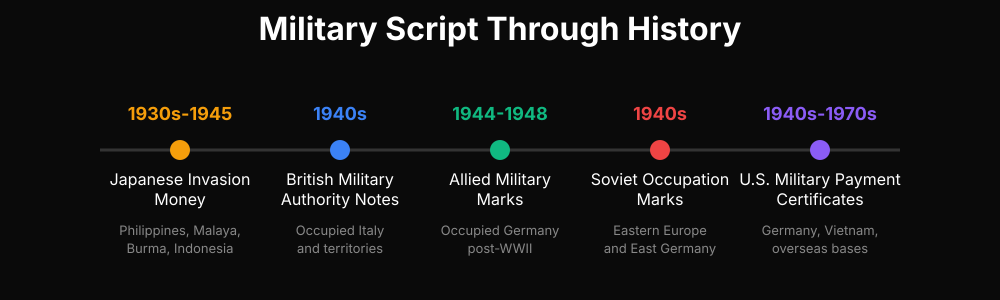
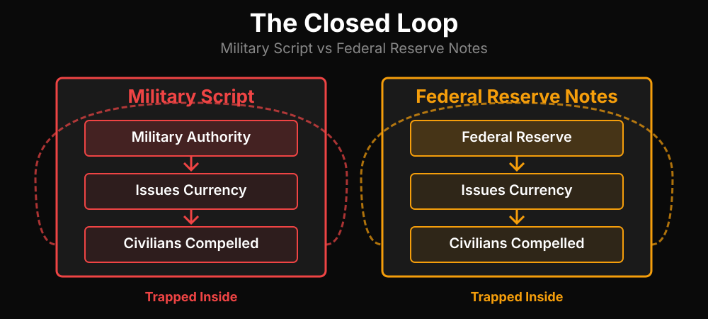

Military script is currency issued by a military authority for use in specific contexts, typically occupied territories or military installations. It is not intended for general circulation among the civilian population. The term itself carries weight: script comes from the Latin scriptum (writing), appearing throughout the King James Bible in contexts of debt, obligation, and record-keeping. In Matthew 18:28, a servant owes his lord "ten thousand talents" — a debt recorded in script, an obligation enforced by authority.
A brief history of military script
Military script has appeared wherever armies have occupied territory:
- Allied Military Marks (1944-1948): Issued by Allied forces in occupied Germany after World War II. These notes were legal tender only for military personnel and occupation authorities, explicitly separated from the Reichsmark used by German civilians.
- Japanese Invasion Money (1930s-1945): Issued in occupied territories across Southeast Asia — the Philippines, Malaya, Burma, Indonesia. Local currencies were abolished; the occupier's script became the only legal medium.
- U.S. Military Payment Certificates (1940s-1970s): Used to pay American troops stationed in Germany, Vietnam, and elsewhere. Designed to prevent soldiers from flooding local economies with dollars, and to control what troops could buy.
- British Military Authority Notes (1943): Issued in occupied Italy and later in liberated territories. Same structure: currency for the occupier's administration, not for civilian commerce.
- French Mandat (1940s): Used in French occupation zones in Germany and Austria.
- Soviet Occupation Marks (1940s): Issued in Soviet-occupied Eastern Europe, later becoming the basis for East Germany's currency system.
Each example shares the same structure: currency issued by a military authority, for use by that authority's personnel, in territory under that authority's control. The civilian population may be forced to accept it, but it is not their currency. It is the currency of their occupier.

The defining characteristic of military script is that it operates within a system of control. It is issued for a specific purpose, managed by a specific authority, and its use implies a specific relationship to that authority. The people who use it are, by definition, operating within the jurisdiction of the issuer.
Federal Reserve Notes share these characteristics. They were originally issued as liabilities of the Federal Reserve for government transactions — paying soldiers, government contractors, and managing federal operations. The Constitution is explicit on this point: Article I, Section 10 prohibits states from making anything but gold and silver coin a tender in payment of debts. Federal Reserve Notes are not gold or silver coin. They are technically liabilities of a private corporation, not the Treasury.
The legal distinction is not subtle. Black's Law Dictionary (5th edition) defines money plainly: "In usual and ordinary acceptation it means coins and paper currency used as circulating medium of exchange, and does not embrace notes, bonds, evidences of debt, or other personal or real estate." Federal Reserve Notes are notes. They are not money. When you hold a Federal Reserve Note, you hold a liability, an IOU from the Federal Reserve — script in the original sense.
This raises a question most people never ask: if Federal Reserve Notes were created to manage government operations, what does it mean that civilians use them? The answer depends on which jurisdiction you are operating in, and that question is answered by the statutes themselves, which are more specific than most people realize.
The structural argument
Military script is issued for military administration. The people who use it are, by definition, operating in a military or government capacity. You cannot use military script without being part of the system that issues it. The script is a tool of administration, not a medium of exchange between private parties.
If Federal Reserve Notes function as military script, then the same logic applies. Using them implies operating within the government's jurisdiction. The question is not whether you signed a contract or agreed to anything explicitly. The system is structured so that using Federal Reserve Notes places you inside a specific legal framework — a framework that applies to public officers and agents, not to private citizens exercising their private rights.
This is not a conspiracy theory. It is a structural observation. The codes that designate Federal Reserve Notes as legal tender apply to officers and agents of the federal government. They do not apply to private citizens in their private dealings. The distinction is critical, and it determines which law governs your transactions.

The corporation called the United States
The next question is about what "the United States" actually is. Most people think of it as a republic, a nation-state with citizens. But the legal definition is different. 26 U.S.C. § 7701(a)(10) defines the United States as the District of Columbia, a municipal corporation. This is not the same as the United States of America, which is a federal republic composed of sovereign states.
The distinction matters because a corporation can have employees, agents, and officers. It can issue its own currency for use within its operations. If the United States is a corporation, then Federal Reserve Notes are the corporation's currency, and the people using them are, in some sense, operating within the corporation's jurisdiction.
Your Social Security Number becomes relevant here. It is assigned at birth, owned by the government, and linked to a record that tracks your earnings, taxes, and benefits. The legal structure suggests that this number is not just an identifier — it is evidence of status. You are not just a citizen; you are a public officer, an agent of the corporation, operating under its rules and using its currency.
The compulsion
Given all this, why do people keep using Federal Reserve Notes? The answer is not choice. It is compulsion. Taxes are assessed and collected in Federal Reserve Notes. Debts are denominated in them. The government requires their use for specific purposes, and the banking system is structured around them. You cannot opt out without significant friction, and most people do not realize there is a choice to make.
This is not an accident. The system is designed this way. It is a closed loop: the government issues currency, requires its use for taxes and debts, and manages its value through monetary policy. The people who use it are inside the loop, subject to its rules. The people who do not use it are, by definition, outside the loop — and the system does not make that easy.
The exit
The connection to Bitcoin Cash is straightforward. It is money that does not require you to be anyone's agent. It is not issued by a government, a corporation, or a central bank. It is not legal tender for anyone, and it is not managed by any authority. It is peer-to-peer cash, final and private, operating outside the loop.
If Federal Reserve Notes are military script, then Bitcoin Cash is the alternative. It is money for people who are not government officers, not public agents, not participants in a corporate jurisdiction. It is money for private parties exercising their private rights. The distinction is not just technical — it is foundational.
The question is not whether you can prove the military script theory in a court of law. The question is whether the structure holds up to scrutiny, and whether there is an alternative for people who do not want to be inside the system. The answer to both is yes.